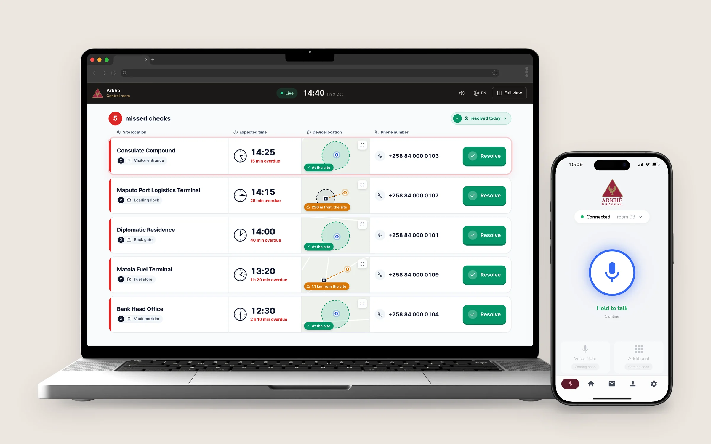

A control room anyone can run
Arkhê Risk Solutions is swapping its radios for smartphones across Mozambique. I designed the control room that watches every patrol and panic button, for operators who may not read English and can’t afford to miss an alarm.

- Client
- Arkhê Risk Solutions
- Location
- Maputo, Mozambique
- My role
- Product designer
- Timeline
- Jul – Nov 2026
- Platform
- Web control room, SASI guard app
- Tools
- Claude, Claude Code
Radios out, smartphones in
Arkhê guards banks, embassies and businesses across Mozambique. It’s replacing hundreds of radios with phones running a patrol and panic app, and it needed a control room to watch them.
Three people, one system
What I designed, and what I worked within
- The control room is mine end to end. Every screen, state, alarm and string in it, in English and Portuguese.
- The guard app was built on the SASI Admin platform. It collects patrol scans and panic alerts for the control room. Its layout comes from the platform; my part was the banner and the button colours.
Too much to read, too little time
- Everything was in English. Most guards speak Portuguese, and some can’t read or write.
- Every site looked the same. The live view listed them all, so the two that needed help hid among forty that didn’t.
- Panic took several steps. Operators saw coordinates and forms when they needed a place and a phone number.
- Logins didn’t survive the field. Guards rotate every few months and share phones between shifts, so face checks and personal logins broke down.
How might an operator spot, check and close every missed patrol or panic alarm, without reading a sentence of English?
Listening first, then looking around
We’re a startup, so research was lean: client meetings, demo rounds and desk research. Each one changed the design.
What we heard
Paraphrased from the client meeting on 8 Oct 2026 and the demo rounds around it.
How others do it
I compared three of the biggest patrol platforms used by guarding companies against what Arkhê needed.
| What matters | TrackTik | GuardTek | Silvertrac | Arkhê |
|---|---|---|---|---|
| Home view leads with exceptions | ||||
| Panic is loud on every screen | ||||
| Portuguese console for operators | ||||
| Built for low literacy: pictures, no typing | ||||
| Reason captured for every missed check | ||||
| Daily report to clients |
Desk research, Nov 2026, from vendor help centres, app stores and review sites. “No or not found” means we couldn’t verify it publicly.
- The guard app is the weak link. TrackTik, Silvertrac and GuardTek’s guard apps score 2.2 to 2.6 on the App Store, even when the web products review well.
- Exceptions live in a tab, not the home screen. Most tools list every site or scan. Only TrackTik’s newer Command Center leads with a queue.
- Panic depends on where you are. TrackTik’s own help says the siren only sounds on one dashboard tab. We made panic take over every screen.
- Nobody designs for low literacy. No vendor documents it, or an African-language console. That gap became our brief.
Who we designed for
Two proto-personas, built from what the client told us about their people rather than from formal interviews.
“If something is wrong, show me. If nothing is, leave me alone.”
- See what needs her now, not every site that’s fine
- Check where the guard is before she calls
- Close each miss with a reason the client accepts
- Long English labels under time pressure
- Lists where problems look like everything else
- Alarms that need several steps
“Show me the picture. I know where the gate is.”
- Scan a checkpoint in one tap
- Raise help without unlocking menus
- Use the phone his shift shares
- Reading English menus
- Logins and passwords
- Not knowing which poster is which checkpoint
Making a busy room readable at a glance
Four principles came first, pulled straight from what we heard. Four decisions followed.
From coverage tables to a queue of problems
The July concept asked “is every site covered?” and answered with a table of every guard. Operators only act on what’s broken, so the main view became a queue of missed checks, newest first.
Drag the handle to compare.
Every row reads without words
Each row answers four questions in the same order: where, when, is the guard there, and who do I call. Then one action.
- Number and pictogram. The same picture is on the checkpoint poster and the guard’s phone.
- A clock, not a timestamp. An analog face and a big time, with how late it is in red.
- Place, in words. “At the site” or “220 m from the site”. Never coordinates.
- One big green button. 60 px tall, with a darker edge so it looks pressable.
Every string lives in one table, so the whole room switches to Portuguese without moving a pixel.
Resolve with a reason, never typed
Clients read every miss at 06:00, so closing one needs a reason. Typing in English wasn’t an option, so the reasons became pictures.
- Five reasons as pictograms: All OK, Forgot, Phone issue, Threat, Other.
- The system pre-picks from what it knows. If the phone was 375 m away, “Other” is chosen and the note says so.
- One line sets expectations: Goes into tomorrow’s 06:00 client report.
Panic takes over
The earlier flow asked operators to dispatch first and confirm later, with raw coordinates on screen. The client called it too complicated in the demo, so the new flow follows how a call actually goes.
- I see it stops the sound, so the room can think.
- A numbered call script: call, ask if they’re safe, then confirm or close as a false alarm.
- The site supervisor is alerted automatically. Several alarms at once become tabs.
Calm until someone is needed
Two modes on one system: a quiet queue for the room, and a full view for supervisors.
The best decisions were removals
Agreed with the client and engineering, the people who’d live with them.
| What came up | What changed |
|---|---|
| Guards rotate and share phones | No login and no face check. Each phone belongs to a site, not a guard. |
| Phones were misused for games and calls | Phones lock to the Arkhê app, factory reset is blocked, and removing the SIM raises an alert. |
| Clients review every miss at 06:00 | Every miss needs a reason before it closes. The report sends itself at 06:00 and retries if it fails. |
| Armed response covers 30 km | Emergency settings send the closest motorbike team inside 30 km, and a patrol car plus the client’s contact outside it. |
What I handed to engineering
Every miss explained by 06:00
The rollout runs at 20 phones a month, so results aren’t in yet. These are the targets we’ll measure against.
Less, on purpose
Next
- Escalate automatically when an alarm goes unseen.
- Missed-check alerts on supervisors’ phones.
- Coverage reports clients can open themselves.